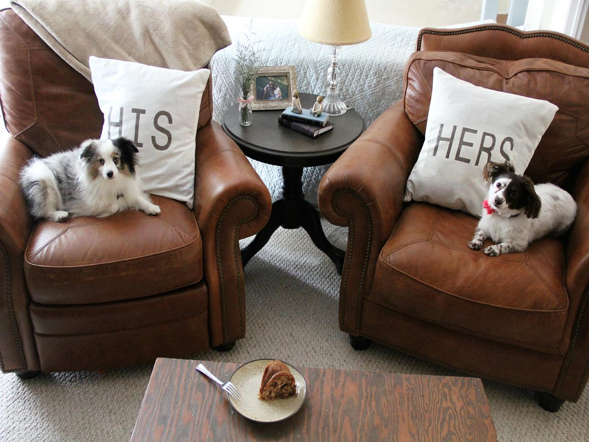
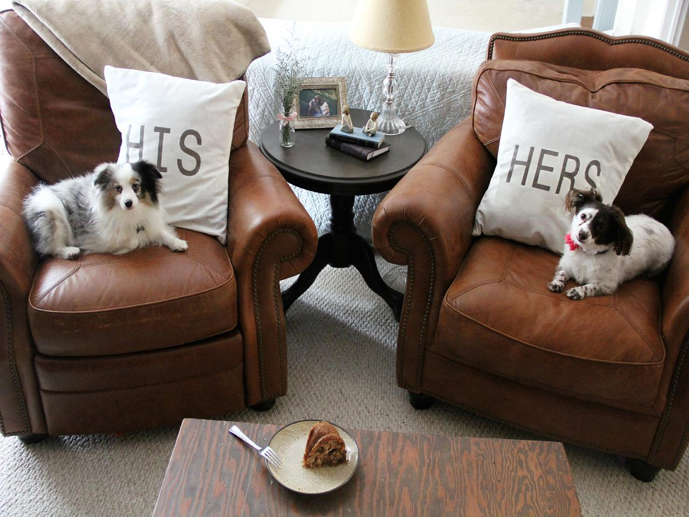
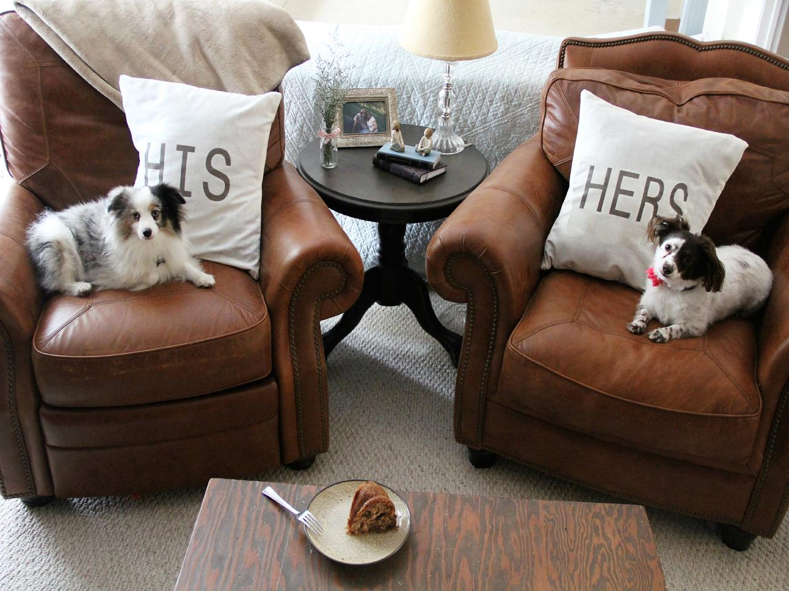
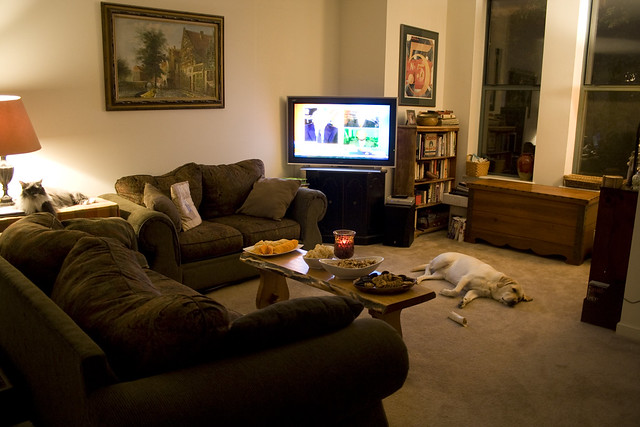
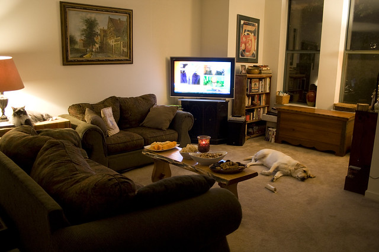

Train:

Candidates: 0, 1, 2
 


Intended concept: Every dog is sitting on a sofa.
Solution provided by tool:
The chosen answer is 2.
The discriminator is: Forall q0: dog!0. Exists q1: sofa!1. And(sitting_on!0!1)